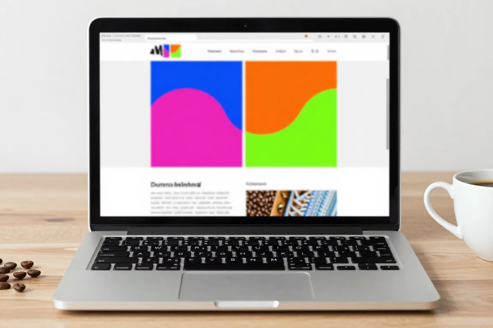

веб · 2010–2015 · также: Дизайн Windows Phone 7, Modern UI, Microsoft Design Language
Плоские цветные плитки, крупный лёгкий шрифт, строгая сетка и содержимое прежде оформления. Пришёл из Windows Phone 7 в 2010 году и опирался на швейцарскую навигационную графику и указатели аэропортов.

Главная идея
Содержимое — это интерфейс: уберите оформление, ведите иерархию шрифтом и движением и пусть плоские цветные плитки несут бренд.
Принципы дизайна
Стройте главный экран из плиток на сетке 12px; берите плитки в 1, 2 и 4 единицы (например, 80px, 168px и 344px).
Берите один сплошной акцентный цвет на плитку из набора 8–12 насыщенных цветов; промежутки между плитками 8px.
Набирайте огромный заголовок страницы лёгким начертанием (300) 40–72px, частично обрезанный правым краем, чтобы показать прокрутку.
Не используйте градиент, тень и глянец; плитка — плоский прямоугольник с радиусом 0px.
Рисуйте значки простыми белыми линейными глифами внутри круга 2px или на плитке; одна толщина линии 2px.
Выравнивайте весь текст по левому краю с полем 12px; подписи 14px, строчными.
Двигайте содержимое при прокрутке и переворотах плиток: появление сдвигом на 40px с задержкой 40ms на элемент.
Антипаттерны
Градиенты, глянец и фаски
Скруглённые углы и падающие тени
Оформление, конкурирующее с содержимым, например тяжёлые панели инструментов